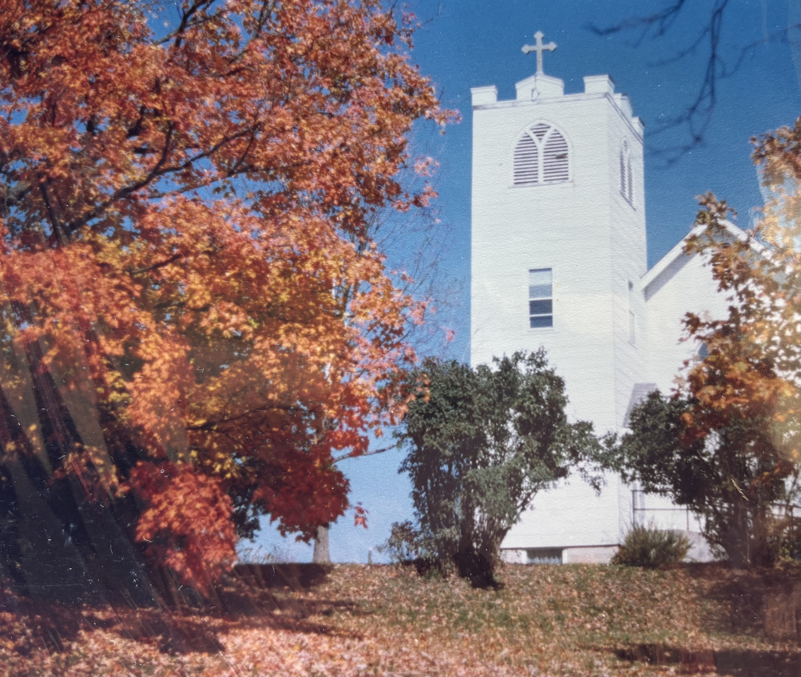
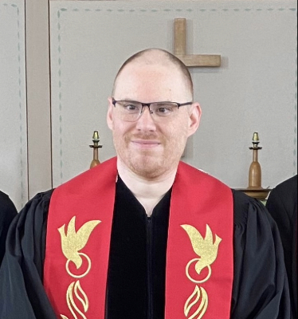

About Us
At Pilgrim UCC in Labadie, Missouri we are a cozy congregation of about 40 active members. We invite you to join us for a Sunday worship service at 10:30 am.
Our Worship Times
Sunday Morning Worship
10:30 AM
Join us every Sunday for worship and fellowship.
Our Worship Services
- Communion on the first Sunday of the month
- Lessons for youth during Children’s Time
- Prayers for Joys and Concerns
- Sermon
- Congregation sung hymns accompanied by our 80 year-old pipe organ
- Volunteer Chime Choir
More Information
Youth Involvement
- Sunday School during the school year
- Confirmation classes
- Youth events such as float trips, tubing at Hidden Valley, movies, Halloween fun, and games
Fellowship
- Chili Lunch - February
- Seafood Social - March/April
- Labadie Community Picnic - June
- Apple Butter - September/October
- Labadie Community Concerts - Various Dates
Causes We Support
- BackPack Food Program - Providing weekend food for students in need at five local elementary schools
- Our Church's Wider Mission
- Eden Seminary Support
- Camp MoVal
- Shanondale Ministry
Leadership
What We Believe
This Congregation acknowledges as its sole head, Jesus Christ, Son of God and Savior of all. It acknowledges as kindred in Christ all who share this confession. It looks to the Word of God in the Scriptures, and to the presence and power of the Holy Spirit, to prosper its creative and redemptive work in the world.
It claims as its own the faith of the historic Church expressed in the ancient creeds and reclaimed in the basic insights of the Protestant Reformers. It affirms the responsibility of the Church in each generation to make this faith its own. In accordance with the teaching of our Lord and the practice prevailing among Christians, it recognizes two sacraments: Baptism and the Lord’s Supper of Holy Communion.
We covenant with one another to seek and respond to the Word and the Will of God. We hold it to be the Mission of the Church to witness to the gospel of Jesus Christ in all the world, while worshiping God and striving for truth, justice and peace. We depend on the Holy Spirit to lead and empower us and pray for the coming of the Kingdom of God and look with faith toward the triumph of righteousness and eternal life.

Matthew Helis
Pastor
Matthew Helis serves Pilgrim United Church of Christ as a pastor, bringing faithful leadership and care to the congregation.
Upcoming Events
Weekly Sunday School During Church
Begins September 13th
Time: 10:30 Worship
Pilgrim Concession Stand at Labadie Car Show
September 20th
Time: TBA
If you're interested in volunteering or donating baked goods please see Pastor Matthew.
Apple Butter Making
October 3rd & 4th
Time: Morning
Our yearly day of making Pilgrim's famous Apple Butter. Join us on Saturday to make the applesauce and Sunday for outdoor worship as we stir the apple butter.
Congregational Meeting
October 25th
Time: Immediatly After 10:30 worship
Members vote to guide the future of our church. Afterwards we will decorate the Fellowship Hall for Halloween.
Watch Live
Can't make it to church? Follow Pilgrim United Church of Christ on Facebook and stay connected with worship and church updates.
Visit on FacebookGet In Touch
Contact Information
Address
301 Academy St Labadie, MO 63055
United States